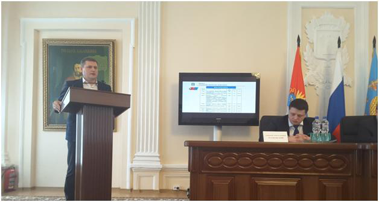
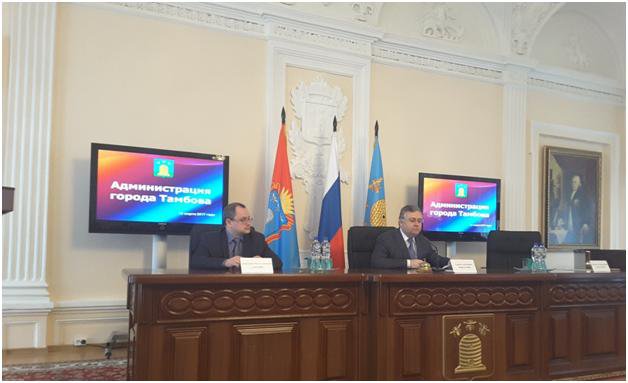

Заседание Координационного совета по инвестиционному климату и развитию малого и среднего предпринимательства в администрации города Тамбова
30 марта 2017 года генеральный директор АО МК «Фонд содействия кредитованию малого и среднего предпринимательства Тамбовской области» (далее – Фонд) Андрей Михайлович Блудов принял участие в заседании Координационного совета по инвестиционному климату и развитию малого и среднего предпринимательства в администрации города Тамбова.
На данном заседании представителями органов власти и предпринимателями были обсуждены перспективы развития малого и среднего предпринимательства, а также меры государственной поддержки.
А.М. Блудов выступил с презентацией, посвященной деятельности Фонда. В данной презентации были отражены результаты работы Фонда за 2016 год, а также определены направления развития на ближайшие три года. В частности, перспективным направлением деятельности Фонда в 2017 году станет предоставление микрозаймов субъектам малого и среднего предпринимательства Тамбовской области. Также до сведения присутствующих была доведена информация о создании структурного подразделения Фонда – Центра поддержки молодежных инициатив, основной деятельностью которого является популяризация предпринимательской деятельности и бизнес-образование молодежи.
На заседании было отмечено, что в настоящее время в Тамбове сконцентрирована почти половина малых и средних предприятий региона, точнее 42 % от общего областного показателя. В Тамбове более 6,5 тыс. малых предприятий, почти 7 тыс. индивидуальных предпринимателей и 81 среднее предприятие. В силу своей мобильности малый и средний бизнес занимает определенную экономическую нишу, определяя новые точки роста экономики областного центра.
Сегодня предпринимателям оказывают не только консультационные услуги по ведению бизнеса. Существует также поддержка в виде различных льгот - по арендной плате, по местным налогам, поддержка имущественного характера, залоговое обеспечение. Данные меры приводят к положительной динамике в этой сфере. Только за первые три месяца текущего года в Тамбове зарегистрировано 68 новых субъектов малого и среднего бизнеса.
Тем не менее, создание благоприятного климата для реализации предпринимательского потенциала и формирование привлекательного образа Тамбова для инвесторов, по-прежнему остается актуальной проблемой.

